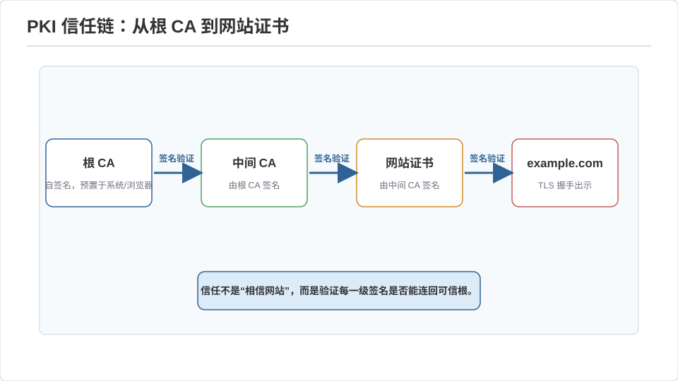
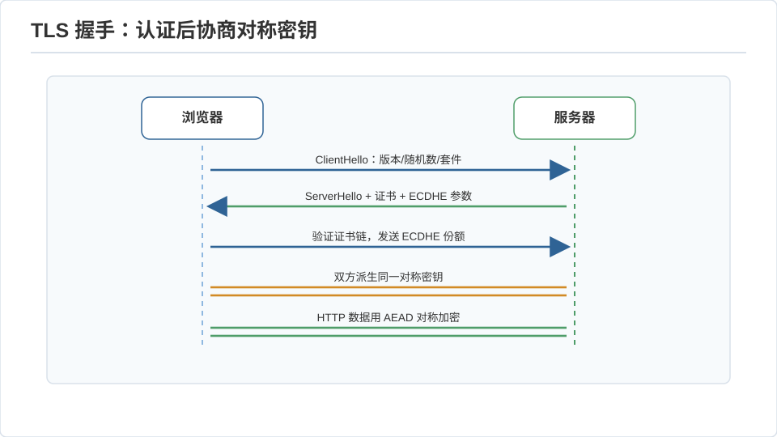
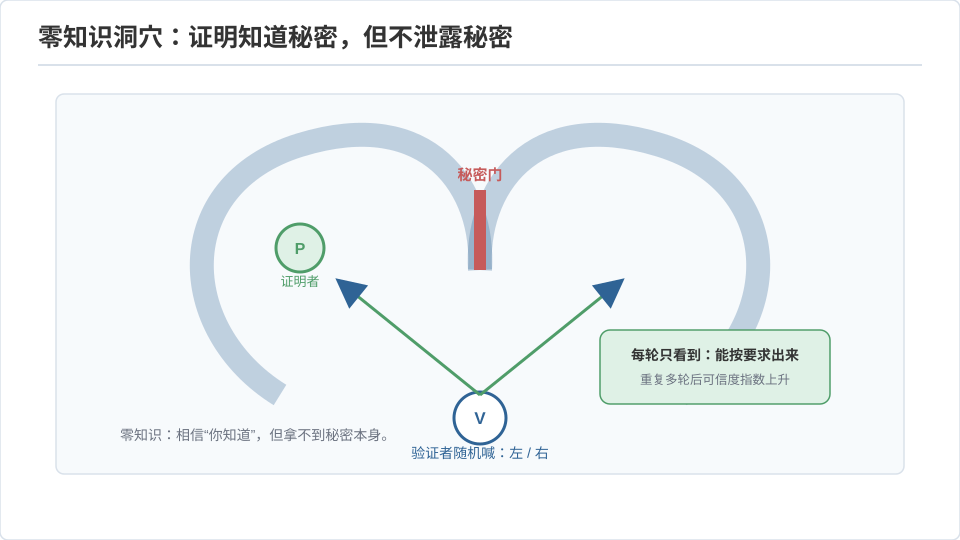

本页目录
密码学 II · 协议、零知识与后量子
对标：Boneh–Shoup 后半 / Katz–Lindell 协议章 / NIST PQC ｜ 前置：crypto-01、toc-02（IP=PSPACE）、physics 站 qi 线（Shor） 单次加密只是起点。真实世界要的是协议——互不信任的多方在敌意网络上达成可信结果。这一页走三段：日常协议（TLS/签名/证书如何拼出你浏览器的锁图标）、零知识证明（证明"我知道"却不泄露）、后量子密码（Shor 算法把 RSA/ECC 判了死缓，怎么办）。
学习层：证明者怎样让人相信，却不把秘密交出去？
具体谜题：六次随机喊话够吗？
在阿里巴巴洞穴协议里，证明者从左/右入口进入，门在中间；验证者每轮随机喊“从左边出来”或“从右边出来”。知道密码的人每次都能响应，不知道的人最多猜中一半。六轮都成功时，冒充者的成功概率是多少？观察完整的左右出入记录，验证者能否从记录中读出密码？
先预测可靠性与泄露量
先写下：① 六轮猜测全中的概率是 \(2^{-6}=1/64\)；② 重复只压低 soundness error，不会把错误证明变成真证明；③ 若协议设计正确， transcript 应该能由模拟器在不知道秘密时生成，因而不泄露秘密本身。
最小心智模型：挑战—响应—重复
零知识协议把“我知道见证”拆成承诺、随机挑战和响应。完备性要求诚实证明者能过，可靠性要求没有见证者难以持续过，零知识要求验证者看到的分布不比模拟器多出关于秘密的信息。TLS 则把身份认证、密钥交换和对称数据面按同样的职责分层拼装。
形式机制：三性质与概率放大
若单轮作弊成功率至多 \(1/2\)，独立重复 \(r\) 轮后 soundness error 至多 \(2^{-r}\)。完备性是诚实策略的接受概率接近 1；可靠性是任意无见证策略的接受概率受界；零知识要求存在模拟器，使验证者视图在计算上或统计上不可区分。数字签名则把“只有私钥能产生”与“任何人能验”绑定到证书信任链。
反例与失效边界
- 挑战若可被证明者预先知道，重复不再放大可靠性；随机性、承诺顺序和独立性是协议的一部分。
- 零知识不等于身份认证，也不等于协议整体安全；重放、恶意验证者、证书错误和实现侧信道仍要单独处理。
- RSA/ECC 的安全假设不抵抗 Shor；后量子迁移必须同时考虑密钥封装、签名、证书链和历史密文的保密寿命。
迁移题：把交互协议拆成可检验性质
为一个“我拥有某数据但不想透露数据”的服务设计挑战—响应草图。分别写完备性、可靠性误差、零知识模拟器和身份绑定在哪里；再给 TLS/PQC 迁移列出需要替换的地基与不能替换的业务不变量。
无 JavaScript 时的静态版本：六轮洞穴挑战若每轮独立且冒充者只能猜一边，全中概率是 \(1/64\approx1.56\%\)；二十轮则是 \(1/1,048,576\)。记录只包含入口、挑战和出口，不应包含门的密码；若挑战在承诺前就泄露，指数放大论证失效。页面脚本用固定挑战序列逐轮显示诚实者与猜测者的 transcript。
1. 数字签名与 PKI：信任怎么落地
数字签名：私钥签、公钥验——在算法假设和密钥保护成立时，只有私钥持有者能产生有效签名，公钥持有者可验证。RSA 签名还需正确编码和填充（如 PSS），不是裸算消息哈希的私钥幂；ECDSA/EdDSA 则有各自签名结构。签名支持来源认证与完整性；不可否认性还涉及密钥控制和制度证据。
但公钥怎么信？ ——公钥基础设施 PKI：证书是"CA（证书颁发机构）用自己私钥签名的'这个公钥属于 example.com'的声明"。你的浏览器内置一批根 CA 公钥，靠信任链（根 CA 签中间 CA 签网站）验证。这是"信任的委托"：你不认识网站，但你信 CA，CA 担保网站。Web 信任的软肋也在此——任一 CA 被攻破就能伪造证书（故有 Certificate Transparency 公开日志监督）。

TLS 握手（你每次 https 都在跑）【骨架】：① 协商套件；② 用 DH/ECDH 交换出会话密钥（crypto-01）——前向保密（每次会话新密钥，私钥日后泄露也不能解旧流量）；③ 服务器用证书 + 签名证明身份；④ 之后用对称密钥（AES-GCM）加密数据。公钥密码建立信任 + 交换密钥，对称密码扛数据吞吐——一次握手把两代密码学的长处拼在一起（🔗 net-02 会从网络分层角度再看一遍 TLS）。

2. 零知识证明：证明"我知道"而不说出来
目标：证明者让验证者相信一个命题为真，除"真"之外不泄露任何信息。三性质：完备（真命题能证）、可靠（假命题证不了，soundness）、零知识（验证者学不到额外信息——形式化为"验证者能自己模拟出整个对话")。
直觉例子（阿里巴巴洞穴）：环形洞穴分左右两条路、中间一道密码门。证明者进洞，验证者在洞口喊"从左边出来"或"从右边出来"。若证明者真知道密码，每次都能按要求出来；若不知道，只有 50% 蒙对——重复 \(n\) 次，蒙混概率 \(2^{-n}\)。验证者确信"他知道密码"，却始终不知道密码是什么。这就是交互式零知识（🔗 toc-02 的 IP=PSPACE 是它的理论母体）。

现代形态 zk-SNARK / zk-STARK：非交互、简洁（证明短、验证快）的零知识——证明"我正确执行了某段计算"而不暴露输入。应用爆发：隐私区块链（证明交易合法不暴露金额）、Layer-2 rollup（把上万笔交易压成一个简短证明，扩容以太坊）、可验证计算（把计算外包给不可信服务器、拿回一个能验的证明）。这是密码学当下最热的工程前沿之一。
3. 安全多方计算与同态加密（一瞥）
- 安全多方计算 MPC：多方各持私密输入，共同算出函数值而不泄露各自输入（姚氏百万富翁问题：两人比谁富而不说出身家）。用混淆电路 / 秘密分享实现。用于隐私保护的联合数据分析。
- 同态加密 FHE：在密文上直接计算，解密后等于对明文计算的结果——"把加密数据交给云、云算完还给你、云全程看不到明文"。Gentry 2009 首个方案，至今在为效率苦战，但已在隐私 ML 推理等场景落地。"数据可用不可见"是这两项技术的共同愿景。
4. 后量子密码：Shor 来敲门
Shor 算法在理想量子计算模型中，以输入比特长度的多项式资源解决整数分解与相应群上的离散对数。它威胁 RSA、有限域 DH 和椭圆曲线密码的基础假设；“多项式”并不等于现有设备可以秒破实际密钥。算法规模、容错纠错开销和物理运行时间是三层不同问题。
从求阶到因数：先算一个看得见的例子
取 \(N=15,a=2\)。模幂依次为 \(2,4,8,1\)，因此 \(a\) 模 \(N\) 的阶为 \(r=4\)：这是使 \(a^r\equiv1\pmod N\) 的最小正整数。因为 \(r\) 是偶数且 \(a^{r/2}=4\not\equiv-1\pmod{15}\)，
一般算法先检查 \(\gcd(a,N)\)；若互素，则用量子求阶获得周期信息，再做经典后处理。量子部分用可逆模幂编码周期、量子傅里叶变换提取频率，测量与连分数恢复候选阶并验证；不合适的阶需要重试。本例用穷举找阶，只解释归约，不是运行了量子算法。Shor 原论文 §5。
这不是因为分解“已被证明属于 NP-中间”。NP-完全/NP-中间通常讨论判定问题；整数分解的经典复杂度地位仍不能如此定论。Shor 有效的依据是上述群结构与求周期算法，不是复杂度类别的名称。
后量子标准：研究候选和可部署标准分开
截至 2026-10-28，按 NIST 项目页 区分：
| 方案 | 用途与依据 | 状态 |
|---|---|---|
| ML-KEM（源自 Kyber） | 密钥封装，模块格相关假设 | FIPS 203，2024 最终标准 |
| ML-DSA（源自 Dilithium） | 数字签名，模块格相关假设 | FIPS 204，2024 最终标准 |
| SLH-DSA（源自 SPHINCS+） | 无状态哈希签名 | FIPS 205，2024 最终标准 |
| Falcon / HQC | 额外签名 / 编码型密钥封装路线 | 已选中、仍在标准化；不能当作以上三份最终标准 |
| HAWK | 附加签名候选 | NIST 记载已退出候选流程 |
NIST 的 HAWK 说明讨论的是具体候选的弱点，并明确既有最终标准不受此事影响。这里不复演攻击，也不把作者的密码分析案例概括成“AI 破解了全部格密码”。同样，削减轮数 AES 的研究结论不能直接覆盖完整轮数 AES。
迁移原因包括“现在保存密文，将来解密”的风险。保密期限较长的数据可能在容错量子计算机出现前就需要准备迁移；应跟随标准和维护中的密码库，而不是自行实现上表算法。选中方案、完成标准、具体实现通过验证，是不同里程碑。
5. 练习与要点
例 1（签名 vs 加密别搞反） 想让"只有我能发、人人能验"用签名（私钥签）；想让"人人能发给我、只有我能读"用加密（公钥加密）。签名与加密是两种不同算法/安全目标，不能把私钥签名普遍理解为“反向加密”，是密码学入门最常见的混淆点。
例 2（零知识的可靠性数感） 洞穴协议重复 20 次，冒充者蒙混概率 \(2^{-20}\approx 10^{-6}\)——"重复交互把作弊概率指数压小"和 algo-03 的 Chernoff、adv-01 的草图放大是同一种概率放大术。
例 3（迁移的现实判断） 你的 Medusa 若长期存加密敏感数据，该关心 PQC 吗？答：取决于数据的"保密寿命"——若十年后泄露也无所谓则不急，若涉长期隐私则应关注 TLS 库的 PQC 支持（现代 OpenSSL/浏览器已在部署混合密钥交换）。安全决策是"威胁 × 时间窗 × 成本"的工程权衡，不是非黑即白。\(\blacksquare\)
理论线到此为止。下一页进入系统线主体——CSAPP I：程序在机器眼里到底长什么样。